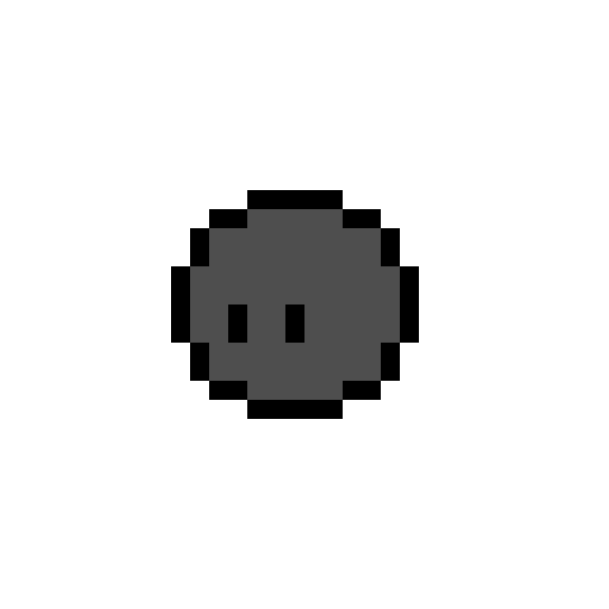
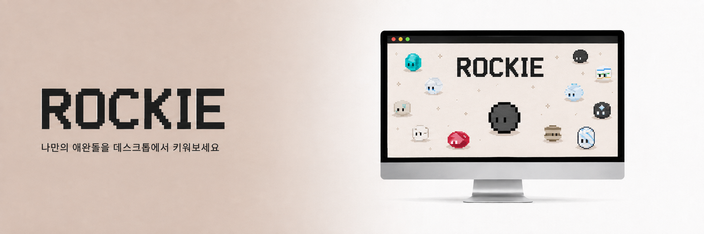

Rockie 소개

Rockie · 데스크톱 애완돌 키우기
화면 위에 사는 작은 돌, Rockie. 마우스를 따라다니고, 쓰다듬으면 반응하고, 나에게 말을 거는 데스크톱 펫이에요. 매일 질문에 답하면 성향에 맞게 여러가지 돌 중 하나로 자라나요.
부담 없이 곁에 두는 데스크톱 친구
Rockie는 컴퓨터 안에서 하루를 함께 보내는 작은 애완돌이에요. 나를 닮은 돌이 자라는 과정을 지켜보세요.


커서를 따라다니고, 쓰다듬으면 반응해요
화면 아래를 거닐며 마우스를 살랑살랑 쫓아오고, 클릭하면 말을 걸 수 있어요. 배터리가 없으면 알려주기도, 가끔 먼저 말을 걸기도 해요.
여러가지 기능을 지원해요
키보드 청소 모드, 집중 모드, 쪽잠 모드 등을 지원해요. 시스템 모니터링으로 나의 컴퓨터 상태까지 확인할 수 있어요. 출시 알림을 받고 싶다면 이메일을 남겨주세요.
답할수록 성향이 자라나요
매일 건네는 성향 질문에 답하면, 조약돌이 나를 닮은 네 가지 돌 (화강암 · 현무암 · 대리석 · 편마암) 중 하나로 진화해요. 이후 성향에 따라 변성체를 거쳐 보석으로 자라나요.
지금, 내 화면에 Rockie를 데려오기
설치하고 실행하면 바로 곁에 나타나요. 완전 무료, 오픈소스예요. Rockie는 1인 개발 프로젝트예요 — 여러분의 응원이 다음 돌, 다음 보석, 다음 기능을 만들어요.